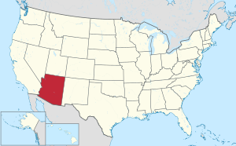

Аризона
| Штат США | |||||
|
Аризона | |||||
| |||||
|  | |||||
| лат. Ditat Deus | |||||
| «Штат Большого каньона» | |||||
| Финикс | |||||
|
Крупнейший город |
Финикс | ||||
| 6 392 310[1] чел (2010 год) 15-е по США | |||||
| плотность |
21,96 чел чел./км² | ||||
| 6-е место | |||||
| всего |
295 254 км² | ||||
| водная поверхность |
(0,32 %) | ||||
| широта |
31°20' с. ш. по 37° с. ш., 500 км | ||||
| долгота | 109°3' з. д. по 114°50' з. д., 645 км |
||||
|
Высота над уровнем моря |
|||||
| максимальная | 3852 м | ||||
| средняя | 1250 м | ||||
| минимальная |
22 м | ||||
|
Принятие статуса штата |
14 февраля 1912 года 48 по счёту | ||||
| до принятия статуса |
Территория Аризона | ||||
|
Губернатор |
Даг Дьюси (Р) | ||||
|
Вице-губернатор |
Кэти Хоббс[en] (Д) (секретарь штата) | ||||
|
Законодательный орган |
Легислатура Аризоны | ||||
| верхняя палата | Сенат Аризоны | ||||
| нижняя палата | Палата представителей Аризоны | ||||
| Кирстен Синема (Д) Марта Максалли (Р) | |||||
| UTC-7 | |||||
| AZ | |||||
|
Официальный сайт |
az.gov | ||||


{kind=link}
Аризо́на[2][3] (англ. Arizona, МФА: [ɛrɪˈzoʊnə]; [ærɪˈzoʊnə]  слушать) — 48-й штат[4], вошедший в состав США. Расположен на юго-западе страны. Наряду с Ютой, Колорадо и Нью-Мексико входит в число «штатов четырёх углов». Столица и крупнейший город штата — Финикс (Phoenix). По оценкам на июль 2014 года, население штата составляло 6 731 484[1] человека — по этому показателю Аризона занимает 15-е место в США. Для климата Аризоны характерны мягкие зимы и высокая температура в летнее время года.
слушать) — 48-й штат[4], вошедший в состав США. Расположен на юго-западе страны. Наряду с Ютой, Колорадо и Нью-Мексико входит в число «штатов четырёх углов». Столица и крупнейший город штата — Финикс (Phoenix). По оценкам на июль 2014 года, население штата составляло 6 731 484[1] человека — по этому показателю Аризона занимает 15-е место в США. Для климата Аризоны характерны мягкие зимы и высокая температура в летнее время года.
Содержание
География[править | править код]
{kind=link}
{kind=link}
.jpg?uselang=ru){kind=link}
.jpg){kind=link}
{kind=link}
{kind=link}
Аризона расположена на юго-западе США, на западе граничит с Калифорнией и Невадой, на севере — с Ютой, на северо-востоке — с Колорадо, на востоке — с Нью-Мексико, на юге — с Мексикой. Площадь территории штата составляет 295 254 км² (6-е место среди штатов страны).
Значительная часть территории штата приходится на горы, плато и пустыни. В Аризоне находится крупнейший лесной массив жёлтой сосны. На севере штата находится Большой каньон реки Колорадо. Юго-западную часть Аризоны занимает пустыня Сонора, в которой расположены такие города как Финикс, Тусон и Юма. Несмотря на то, что это одна из наиболее жарких и засушливых пустынь США, Сонора имеет довольно разнообразную флору и фауну, что объясняется наличием в году двух сезонов дождей. На северо-западе штата находится пустыня Мохаве, которая отличается от Соноры более высотным положением и наличием редких отдельно стоящих деревьев. Пустыня Пейнтед-Дезерт занимает часть Колорадского плато на севере Аризоны. Небольшая территория на юго-востоке штата является частью пустыни Чиуауа, которая по сравнению с Сонорой из-за высотного положения имеет более мягкие летние температуры.
Крупнейшие реки штата — Колорадо и её крупный приток, река Хила. Почти вся территория Аризоны за исключением некоторых южных и юго-восточных районов находится в бассейне реки Колорадо.
На территории штата расположено три национальных парка.
Климат[править | править код]
Из-за обширной территории и различной высоты над уровнем моря климатические условия штата довольно сильно различаются от региона к региону. На низких высотах климат главным образом пустынный, с мягкой зимой и жарким летом. Обычно с поздней осени до ранней весны погода мягкая со средним минимумом 16 °С, однако нередки морозы. С середины февраля замечается повышение дневных температур при довольно прохладных ночах. С июня по сентябрь наиболее жарко и сухо. Самая высокая когда-либо зафиксированная в Аризоне температура была отмечена в Лейк-Хавасу-Сити 29 июня 1994 года и 5 июля 2007 года и составляла 53 °С. Самая низкая температура была отмечена 7 января 1971 года на озере Холи и составила −40 °C.
Распределение осадков зависит от времени года, высоты местности над уровнем моря и рельефа. Наибольшее количество осадков получают горные хребты в центральной и юго-восточной частях штата; наименьшее — в аридных районах на юго-западе Аризоны. Средний годовой показатель для штата составляет около 323 мм. Осадки выпадают главным образом в течение двух сезонов дождей: зимой, когда холодный фронт приходит с Тихого океана и летом, когда приходит муссон.
Северная часть штата представляет собой плато, высота которого значительно выше пустынь в центре и на юге. Для этой территории характерны холодная зима и мягкое лето. Иногда на север штата приходятся холодные воздушные массы из Канады, принося температуры ниже −18 °C.
Аризона — один из двух штатов, которые не переходят на летнее время (второй такой штат Гавайи).
История[править | править код]
По поводу этимологии названия Аризона единого мнения нет, в числе основных гипотез — испанская и индейская. Название штата происходит от переданного испанцами слова индейцев племени пима — «место маленького ручья», на языке племени ацтеков — «рождающий серебро».
На территории штата с 1 по 15 вв. н. э. располагалась крупная доколумбова археологическая культура Хохокам.
Население[править | править код]
{kind=link}
{kind=link}
По данным Бюро переписи населения США на 1 июля 2011 года население Аризоны составляет 6 482 505 человек; по сравнению с показателем переписи 2010 года прирост составил 1,42 %[5]. Население метрополии Финикса выросло с 1991 по 2001 годы на 45,3 %, что сделало Аризону вторым штатом с самым высоким приростом населения в течение 90-х годов (первым была Невада)[6]. Сегодня население метрополии Финикса превышает 4,3 млн человек. Около 58 % населения Аризоны проживают в городах с населением более 100 тыс. человек (самый высокий показатель среди всех штатов страны).
По данным переписи 2010 года этнический состав штата был следующий: белые (73 %), афроамериканцы (4,1 %), коренные американцы (4,6 %), азиаты (2,8 %), гавайцы и океанийцы (0,2 %), представители других рас (11,9 %), представители 2-х и более рас (3,4 %)[7]. Происхождение населения Аризоны по данным на 2009 год: мексиканское (27,4 %), немецкое (16 %), ирландское (10,8 %), английское (10,1 %), итальянское (4,6 %)[8]. В Аризоне проживает наибольшее среди всех 48-ми континентальных штатов число человек, говорящих на индейских языках. Так, около 85 тыс. человек говорят на языке навахо и 10,4 тыс. человек на западно-апачском языке. Аризонский округ Апач имеет наибольшую в США концентрацию носителей индейских языков[9]. По данным на 2010 год нелегальная иммиграция в штате составляет 7,9 % (второй самый высокий показатель в стране)[10].
По данным на 2005—2007 годы 72,1 % населения штата говорит дома только на английском; 21,7 % — только на испанском.
Динамика численности населения:
- 1950: 749 587 чел.
- 1960: 1 302 161 чел.
- 1970: 1 745 944 чел.
- 1980: 2 718 215 чел.
- 1990: 3 665 228 чел.
- 2000: 5 130 632 чел.
- 2010: 6 392 017 чел.[11]
- 2013: 6 626 624 чел.
Религиозный состав населения:
- католики — 29 %
- не исповедуют никакую религию — 17 %
- евангельские христиане — 10 %
- баптисты — 8 %
- мормоны — 6 %
- методисты — 5 %
- остальные — 25 %[12]
В Аризоне проживает до 50 тысяч русскоговорящих жителей[13].
Законодательство и политика[править | править код]
Федеральное представительство[править | править код]
В число известных политических деятелей штата Аризона входят Джон Маккейн и Барри Голдуотер, которые суммарно представляли штат в Сенате США в течение 65 лет.
Экономика[править | править код]
{kind=link}
{kind=link}
ВРП Аризоны на 2004 год составлял 187,27 миллиардов долларов. Если бы Аризона была независимой, она бы занимала 61-е место в мире по показателю ВВП и была бы впереди Норвегии, Дании, Чехии, Ирландии, Финляндии и Новой Зеландии. Аризона занимает 21-е место в США по уровню экономического развития.
ВВП на душу населения составляет 27 232 долларов, 39-й по стране.[источник не указан 3325 дней] Добыча меди — важная отрасль экономики, обеспечивающая 2/3 добычи меди в стране. По добыче меди этот штат занимает первое место в стране. Крупнейшее месторождение меди — Сан-Мануэль.
Все наиболее крупные промышленные предприятия штата сосредоточены в районах городов Финикса и Тусона. Здесь же проживает большая часть населения штата.
Именно в этом штате находится крупнейшая криофирма Alcor.
Символы штата[править | править код]
- Девиз штата: Ditat Deus (Господь обогащает)
- Цветок штата: цветок кактуса Сагуаро
- Слоган штата: Штат Большого каньона
- Камень штата: бирюза
В астрономии[править | править код]
В честь Аризоны назван астероид (793) Аризона, открытый в 1907 году в обсерватории Лоуэлла, расположенной в Флагстаффе на территории штата.
Примечания[править | править код]
- ↑ Перейти обратно: 1 2 The population development in Arizona (англ.). City Population. Дата обращения 24 июля 2015. Архивировано 24 июля 2015 года.
- ↑ Соединенные Штаты Америки // Атлас мира / сост. и подгот. к изд. ПКО «Картография» в 2009 г. ; гл. ред. Г. В. Поздняк. — М. : ПКО «Картография» : Оникс, 2010. — С. 168—169. — ISBN 978-5-85120-295-7 (Картография). — ISBN 978-5-488-02609-4 (Оникс).
- ↑ Аризона // Словарь географических названий зарубежных стран / отв. ред. А. М. Комков. — 3-е изд., перераб. и доп. — М. : Недра, 1986. — С. 25.
- ↑ Указатель географических названий // Атлас мира / сост. и подгот. к изд. ПКО «Картография» в 2009 г. ; гл. ред. Г. В. Поздняк. — М. : ПКО «Картография» : Оникс, 2010. — С. 205. — ISBN 978-5-85120-295-7 (Картография). — ISBN 978-5-488-02609-4 (Оникс).
- ↑ Annual Estimates of the Resident Population for the United States, Regions, States, and Puerto Rico: April 1, 2010 to July 1, 2011 (CSV). 2011 Population Estimates. United States Census Bureau, Population Division (December 2011). Дата обращения 21 декабря 2011. Архивировано 3 февраля 2012 года.
- ↑ «Ranking Tables for Metropolitan Areas: 1990 and 2000.» United States Census Bureau. April 2, 2001. Retrieved on July 8, 2006.
- ↑ American FactFinder — Results
- ↑ American FactFinder, United States Census Bureau. Arizona – Selected Social Characteristics in the United States: 2007-2009. Factfinder.census.gov. Дата обращения 2 ноября 2011. Архивировано 4 февраля 2012 года.
- ↑ Arizona has most Indian language speakers. upi.com Accessed 2011-12-12.
- ↑ Slevin, Peter. New Arizona law puts police in 'tenuous' spot, Washington Post (April 30, 2010), С. A4.
- ↑ Resident Population Data — 2010 Census
- ↑ U.S. Religious Landscape Survey (PDF). The Pew Forum (февраль 2008). Дата обращения 13 октября 2009. Архивировано 4 февраля 2012 года.
- ↑ Сайт Русской библиотеки-клуба в Финиксе, Аризона.
Ссылки[править | править код]
| Аризона на Викискладе | |
| Аризона в Викиновостях | |
| Аризона в Викигиде |
- az.gov (англ.) — официальный сайт штата Аризона
{kind=link}